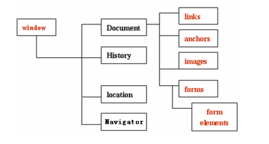

BOM是 “Browser Object Model”（浏览器对象模型）的简写，它使JavaScript拥有与浏览器交互的能力。

window表示浏览器窗口，浏览器中大部分对象都是window的成员。所以一般在 JavaScript
程序中可以省略 window 对象，可以直接访问window对象的属性和方法。
3.1 window常用方法(window.可以省略)
对话框：
1. window.alert()： 警告框。
2. window.prompt)()：询问框。给用户一个提示框让用户输入，返回提示框中输入的值。
3. window.confirm()：确认框。给用户一个提示框选择“确定”或“取消”，返回 true/false.
窗口：
4.window.open()：弹出一个新窗口（子窗口）
5.window.opener()：在子窗口中使用，表示父窗口的window对象
6.window.close()：关闭当前窗口
定时：
7.var taskid = window.setTimeout(function,ms)：定时任务
8.var taskid = window.setInteval(function,ms)：间隔执行任务
9.window.clearTimeout(taskid)：清除定时任务
10.window.clearInteval(taskid)：清除间隔执行任务
history 含有以前访问过的网页的 URL 地址。
常用方法：
1. history.forward() ： 与在浏览器中点击按钮向前相同
2. history.back() ：与在浏览器点击后退按钮相同
3.window.history.go(x)：x为正数则前进x个，为负数则后退x个，0是刷新
location 对象用于获得当前页面的地址 (URL)，并把浏览器重定向到新的页面。
如：location.href="http://www.baidu.com";
或window.location.href = window.location.href; //刷新